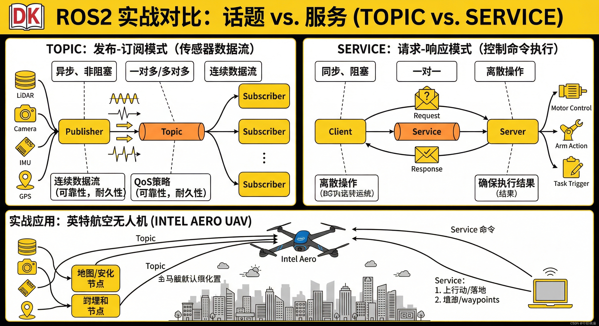

话题与服务实战对比
Topic 话题
发布/订阅模式 (Publish/Subscribe)
案例：无人机位置发布
rostopic pub /uav/pose geometry_msgs/Pose ...
持续发布，订阅者接收
Service 服务
请求/响应模式 (Request/Response)
案例：起飞指令
rosservice call /uav/takeoff " takeoff: true"
一次性请求，立即响应
何时使用？
Use Topic When
• 传感器数据流
• 状态持续更新
• 多订阅者接收
Use Service When
• 控制命令
• 一次性操作
• 需要返回值
英特航空场景：Topic发布位置 / Service执行起飞/降落
